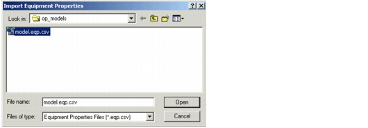

Importing and Exporting Data > Importing and Exporting User Data Settings
Importing and Exporting User Data Settings
You can export the equipment properties and costs, and some network-wide settings such as delay and availability settings, and import them again in another scenario. This enables you to share the same models and cost data among different scenarios. The exported CSV file contains the following data:
Note—You can import user data settings only if the network has no equipment installed.
To import or export user data settings, choose File > Import > User Data Settings or File > Export > User Data Settings.
Figure 5-22 Import Equipment Properties Dialog Box

Loading and Saving User Default Settings
The File > Import and File > Export submenus contain operations for loading and saving the Default User Data Settings file; you can use this file to specify the default settings to use when creating a new scenario.
| Home © 1987-2007 OPNET Technologies, Inc. All Rights Reserved. This software may be covered by one or more U.S. Patents. See complete patent notice in the Legal Notices section. OPNET Support Center |